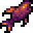

Stardew Valley
Conjunto Mercado Joja abandonado
Cinema
Conjunto A Desaparecida
5 Itens
| Itens | Nome | Quantidade | Local |
|---|---|---|---|

|
Vinho | 1 | Barril de madeira, qualidade prata. |

|
Maionese de dinossauro | 1 | Máquina de maionese. |

|
Fragmento prismático | 1 | Minas e Caverna da Caveira. |

|
Fruta antiga | 5 | Plantação qualidade dourada. |
|  | Salmão nulo | 1 | Pescado no Pântano da bruxa, qualidade dourada. |

|
Caviar | 1 | Jarra de conserva. |